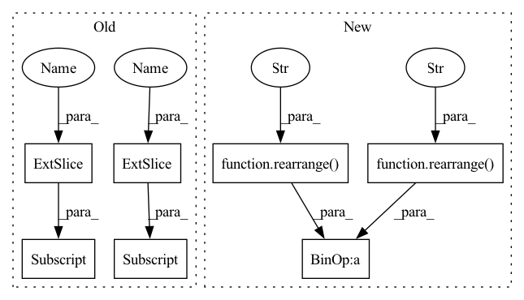

Pattern ID :9196
Before Change
for key, db_offset, ann in zip(keys, self.db_offsets, self.anns):
ann.add(key, ids = ann_insert_ids + db_offset)
add_indices = (np.arange(num_memories)[None, :] + self.db_offsets[:, None]) % self.max_num_entries
self.db[np.arange(self.num_indices)[:, None] , add_indices] = memories
self.db.flush()
self.db_offsets += num_memoriesAfter Change
for key, db_offset, ann in zip(keys, self.db_offsets, self.anns):
ann.add(key, ids = ann_insert_ids + db_offset)
add_indices = (rearrange( np.arange(num_memories), "j -> 1 j" ) + rearrange( self.db_offsets, "i -> i 1" ) ) % self.max_num_entries
self.db[rearrange(np.arange(self.num_indices), "i -> i 1"), add_indices] = memories
self.db.flush()
In pattern: SUPERPATTERN
Frequency: 3
Non-data size: 7
Instances Fragment ID: 33293784
Project Name: lucidrains/memorizing-transformers-pytorch
Commit Name: 7553651625c462aa74ebb936dbb588af2f58907b
Time: 2022-03-25
Author: lucidrains@gmail.com
File Name: memorizing_transformers_pytorch/ann_memory.py
M Class Name: ANNMemory
N Class Name: ANNMemory
M Method Name: add(2)
N Method Name: add(2)
M Parent Class:
N Parent Class:
M File Name: memorizing_transformers_pytorch/ann_memory.py
N File Name: memorizing_transformers_pytorch/ann_memory.py
M Start Line: 103
M End Line: 112
N Start Line: 104
N End Line: 113
Before Change
// shaw"s relative positional embedding
seq = torch.arange(n, device = device)
dist = seq[:, None] - seq[None, :]
dist = dist.clip(-max_pos_emb, max_pos_emb) + max_pos_emb
rel_pos_emb = self.rel_pos_emb(dist).to(q)
pos_attn = einsum("b h n d, n r d -> b h n r", q, rel_pos_emb) * self.scale
dots = dots + pos_attn
if exists(mask) or exists(context_mask):
mask = default(mask, lambda: torch.ones(*x.shape[:2], device = device))
context_mask = default(context_mask, mask) if not has_context else default(context_mask, lambda: torch.ones(*context.shape[:2], device = device))
mask_value = -torch.finfo(dots.dtype).max
mask = mask[:, None, :, None] * context_mask[:, None, None, :]
dots.masked_fill_(~mask, mask_value)
attn = dots.softmax(dim = -1)
After Change
// shaw"s relative positional embedding
seq = torch.arange(n, device = device)
dist = rearrange( seq, "i -> i ()" ) - rearrange( seq, "j -> () j" )
dist = dist.clip(-max_pos_emb, max_pos_emb) + max_pos_emb
rel_pos_emb = self.rel_pos_emb(dist).to(q)
pos_attn = einsum("b h n d, n r d -> b h n r", q, rel_pos_emb) * self.scale
dots = dots + pos_attn Fragment ID: 33293785
Project Name: lucidrains/conformer
Commit Name: 0f8fbd31dc55d0dd6b6082fa74bad5f7da15fa1e
Time: 2021-01-03
Author: lucidrains@gmail.com
File Name: conformer/conformer.py
M Class Name: Attention
N Class Name: Attention
M Method Name: forward(5)
N Method Name: forward(5)
M Parent Class: nn.Module
N Parent Class: nn.Module
M File Name: conformer/conformer.py
N File Name: conformer/conformer.py
M Start Line: 106
M End Line: 117
N Start Line: 98
N End Line: 109
Before Change
if mask is not None:
mask = F.pad(mask.flatten(1), (1, 0), value = True)
assert mask.shape[-1] == dots.shape[-1], "mask has incorrect dimensions"
mask = mask[:, None, :] * mask[:, :, None]
dots.masked_fill_(~mask, mask_value)
del mask
attn = dots.softmax(dim=-1)After Change
if mask is not None:
mask = F.pad(mask.flatten(1), (1, 0), value = True)
assert mask.shape[-1] == dots.shape[-1], "mask has incorrect dimensions"
mask = rearrange( mask, "b i -> b () i ()" ) * rearrange( mask, "b j -> b () () j" )
dots.masked_fill_(~mask, mask_value)
del mask
attn = dots.softmax(dim=-1) Fragment ID: 33293780
Project Name: lucidrains/vit-pytorch
Commit Name: 3f2cbc6e23b935224b57915a2b0e1a21eb60c5a6
Time: 2021-02-17
Author: lucidrains@gmail.com
File Name: vit_pytorch/vit_pytorch.py
M Class Name: Attention
N Class Name: Attention
M Method Name: forward(3)
N Method Name: forward(3)
M Parent Class: nn.Module
N Parent Class: nn.Module
M File Name: vit_pytorch/vit_pytorch.py
N File Name: vit_pytorch/vit_pytorch.py
M Start Line: 58
M End Line: 60
N Start Line: 58
N End Line: 60
Before Change
for key, db_offset, ann in zip(keys, self.db_offsets, self.anns):
ann.add(key, ids = ann_insert_ids + db_offset)
add_indices = (np.arange(num_memories)[None, :] + self.db_offsets[:, None] ) % self.max_num_entries
self.db[np.arange(self.num_indices)[:, None] , add_indices] = memories
self.db.flush()
self.db_offsets += num_memoriesAfter Change
for key, db_offset, ann in zip(keys, self.db_offsets, self.anns):
ann.add(key, ids = ann_insert_ids + db_offset)
add_indices = (rearrange( np.arange(num_memories), "j -> 1 j" ) + rearrange( self.db_offsets, "i -> i 1" ) ) % self.max_num_entries
self.db[rearrange(np.arange(self.num_indices), "i -> i 1"), add_indices] = memories
self.db.flush()
Fragment ID: 33293779
Project Name: lucidrains/memorizing-transformers-pytorch
Commit Name: 7553651625c462aa74ebb936dbb588af2f58907b
Time: 2022-03-25
Author: lucidrains@gmail.com
File Name: memorizing_transformers_pytorch/ann_memory.py
M Class Name: ANNMemory
N Class Name: ANNMemory
M Method Name: add(2)
N Method Name: add(2)
M Parent Class:
N Parent Class:
M File Name: memorizing_transformers_pytorch/ann_memory.py
N File Name: memorizing_transformers_pytorch/ann_memory.py
M Start Line: 103
M End Line: 112
N Start Line: 104
N End Line: 113